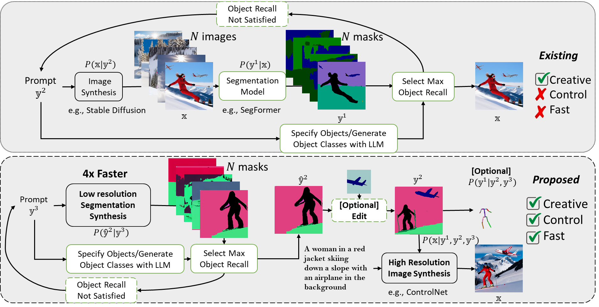
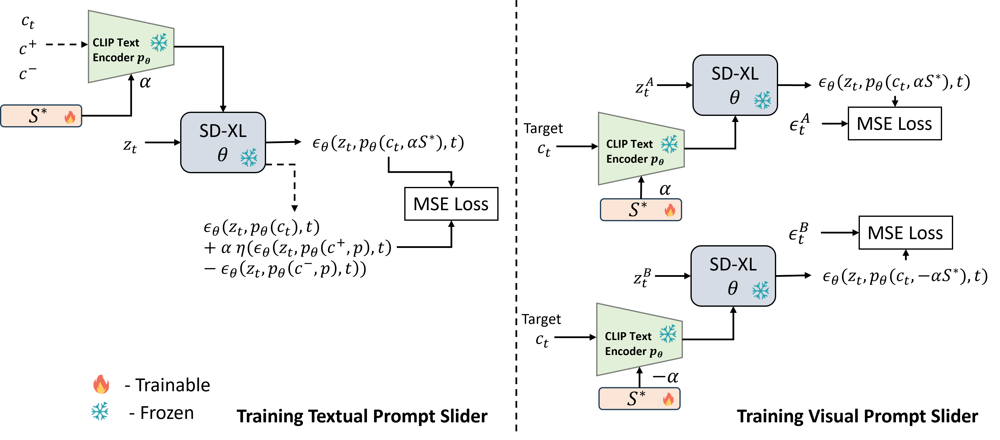

FG-DM vs Traditional Models
Comparison with traditional diffusion models for generating images with high object recall. FG-DM models the joint distribution of an image and conditioning variables (e.g., segmentation, depth, normal, sketch or pose maps) which allows creative flexibility, editing controllability and faster attribute recall verification ability unlike the standard diffusion model pipeline.
FG-DM framework
FG-DM implemented for the distribution \(P(\mathbf{x}, \mathbf{y}^1, \mathbf{y}^2 | \mathbf{y}^3)\) of image \(\mathbf{x}\), segmentation mask \(\mathbf{y}^2\), and pose map \(\mathbf{y}^1\), given text prompt \(\mathbf{y}^3\). Each factor (conditional probability written at the top of each figure) is implemented by adapting a pretrained Stable Diffusion to generate the visual conditions. Note that the encoder-decoder pair and SD backbone is shared among all factors thereby reducing the total number of parameters of the model. Conditional generation chains are trained at a lower resolution for a better inference throughput.
Qualitative results of FG-DMs with semantic, depth, sketch and normal maps
Synthesized Segmentation/Depth/Sketch/Normal maps and the corresponding images by FG-DMs adapted from SD using COCO dataset. FG-DMs generalize well to prompts beyond the training dataset. Although the FG-DM is only trained to associate persons with black semantic maps segments, it also assigns the chimp, a class that it was not trained on, to that color. This shows that the FG-DM can integrate the prior knowledge by SD that “chimps and persons are similar" into the segmentation task. Conversely, the similarity between chimps and people might induce SD to synthesize a chimp in response to a prompt for people, or vice-versa. This is shown in the bottom left of the Figure where the FG-DM correctly synthesizes different colors for the chimp and the person, but the ControlNet fails. While the black box nature of SD makes these errors opaque, the FG-DM allows inspection of the intermediate conditions to understand these hallucinations. This illustrates its benefits in terms of explainability.

Text-based Image Editing with FG-DM and Inversion.
We have experimented with text-based editing of both real images and their segmentation masks using FGDM and LEDITS++ inversion. The top of Figure shown below refers to inversion of the segmentation mask.
The bottom part of Figure below shows the comparison of LEDITS++ editing with inversion by SD and by the image synthesis factor of the FG-DM.

Controllable image Generation and editing with the FG-DM.
In our experiments, we explored qualitative results for manipulating segmentation, depth, and sketch maps to achieve precise spatial control, resizing and adding new objects, and incorporating text into images. Each example is represented by a pair \((\mathbf{y},\mathbf{x})\), synthesized by the FG-DM of the joint \(P(\mathbf{x},\mathbf{y})\), showcased in the top row.
To demonstrate the editing capabilities, the condition map \(\mathbf{y}\) underwent manual adjustments, as illustrated in the bottom row. The resynthesis of the image \(\mathbf{x}\) was achieved using the conditional probability factor \(P(\mathbf{x}|\mathbf{y})\).
For semantic map editing, we present the results of fusing two generated segmentation masks (the synthesized second mask (airplane) is not shown here) using our specialized semantic editing tool. Additionally, the synthesized pose maps are shown beside the generated images, accompanied by their respective segmentations.

Examples of Images generated by FG-DM after editing and comparison with popular text-to-image models.
The generated semantic masks of the squirrel and rhino examples in first column are used to obtain the edited masks as shown in the middle. The corresponding generated images by FG-DM are shown to the right of the masks. Images generated (randomly sampled) by Stable Diffusion v1.4 and v1.5 for the same prompt “An image of a giant squirrel beside a small rhino ” is shown on the far right.

Editing generated segmentation masks
Using FG-DM, you can generate and edit segmentations to achieve desired spatial control of the objects.